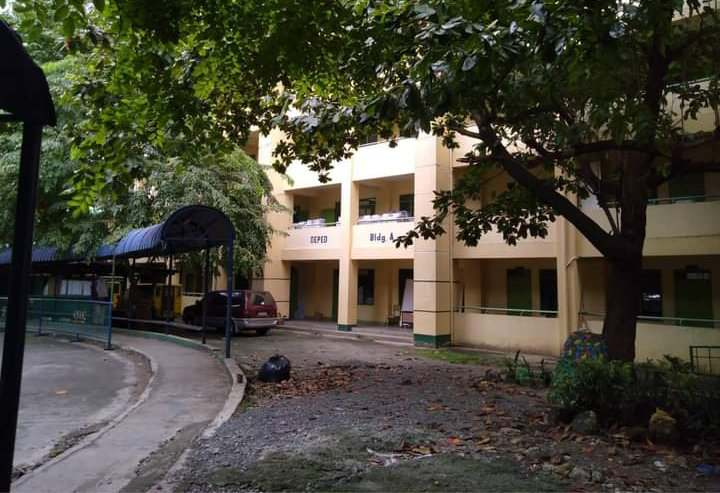
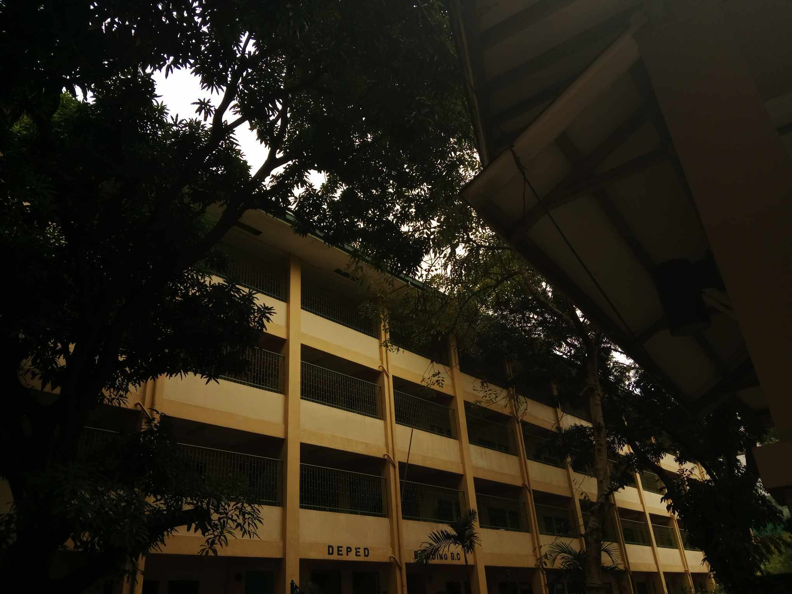
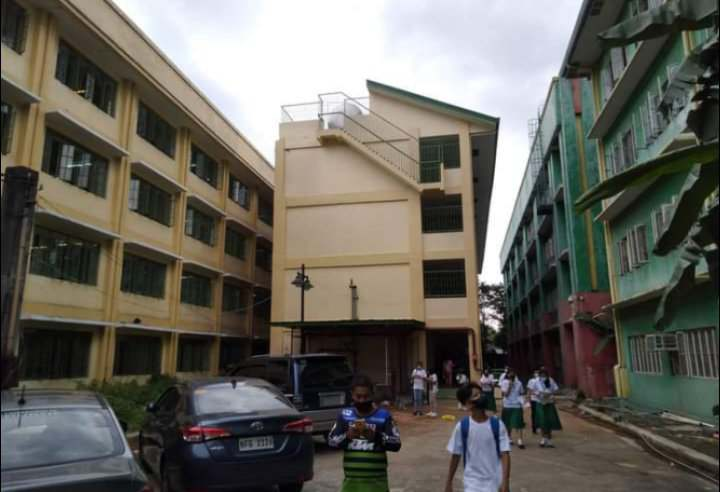
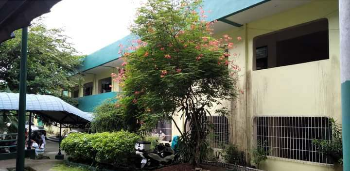
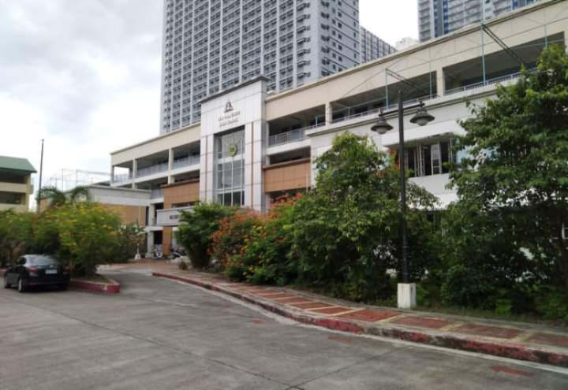

SFHS
SHS STRAND PROGRAMS
Our school offer Academic Track with the following Strands:
STRANDS
ABM
GAS
HUMSS
STEM
TVL
The Accountancy, Business, and Management (ABM) Strand.
The General Academic (GAS) Strand.
The Humanities and Social Sciences (HUMSS) Strand.
The Science, Technology, Engineering, and Mathematics (STEM) Strand.
The Technical Vocational Livelihood (TVL) Strand.

ABM-The ABM (Accountancy, Business, and Management) Strand.
Is designed for students who are interested in business, finance, entrepreneurship, and accounting.
The curriculum of the ABM strand provides a strong foundation in the principles of business and management, as well as financial and accounting concepts.

GAS-GAS is an acronym for General Academic Strand.
It takes a general approach to prepare students for university life.
Compared to other strands, students can expect to tackle different disciplines.
This can cover various subjects and topics such as Humanities, Management, Social Sciences, and even Organization.

HUMSS-The Humanities and Social Sciences (HUMSS) Strand.
It covers topics in the liberal arts, training students to think, write, and speak about various humanistic and societal concerns.

STEM-STEM stands for Science, Technology, Engineering, and Mathematics Strand.
Through the STEM strand, senior high school students are exposed to complex mathematical and science theories and concepts which will serve as a foundation for their college courses.

TVL Track-And lastly the TVL Track(Technical Vocational Livelihood).
Is a strand in the senior high school curriculum in the Philippines that aims to provide students with technical and vocational skills that can be used for their livelihood or future career.